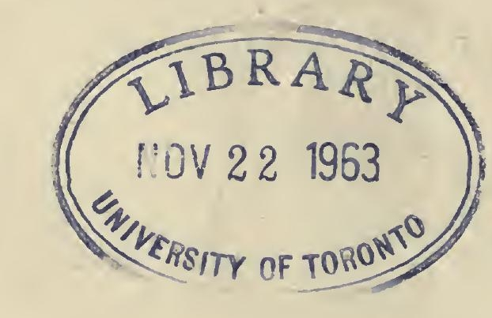

श्रीमच्छ्रीकण्ठनाथप्रभृतिगुरुवरादिष्टसन्नीतिमार्गा
लब्ध्वा यत्रैव सम्यक्पटिमनि घटनामीश्वराद्वैतवादः ।
कश्मीरेभ्यः प्रसृत्य प्रकटपरिमले। रञ्जयन्सर्वदेश्यान्
देशेऽप्यस्मिन्नदृष्टो घुसृणविसरवत्स्तान्मुदे सज्जनानाम् ॥१॥
तरत तरसा संसाराब्धिं विधत्त परे पदे
पदमविचल नित्या लोकप्रमोदसुनिर्भरे ।
विमृशत शिवादिष्टाद्वैतावबोधसुधारसं
प्रसभविलसत्सद्युक्तनान्तः समुत्प्लवदायिनम् ॥२॥
